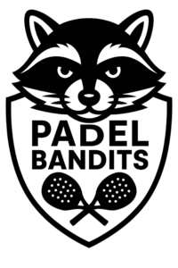

Trade Mark Journal No.2025/048 28 November 2025
UK00004296979 19 November 2025 (25,28,37,41,42)

- Class 25
- Tennis pullovers; Tennis shirts; Tennis socks; Tennis shorts; Tennis skirts; Tennis dresses; Sports clothing [other than golf gloves]; Sports jerseys; Sports clothing; Sports singlets; Sports jackets; Sports wear; Clothes for sports; Sports garments.
- Class 28
- Tennis racquets; Tennis rackets; Rackets [for tennis]; Racket cases [for tennis or badminton]; Racketball rackets; Lawn tennis racquets; Lawn tennis rackets; Grip bands for tennis rackets; Tennis racket presses; Tennis balls; Strings for tennis racquets; Tennis nets; Grip bands for badminton rackets; Tennis net centre straps; Tennis racquet strings; Tennis racket covers; Tennis uprights [sports equipment]; Racquets; Racquet ball nets; Racketball balls; Tennis ball retrievers; Platform tennis balls; Balls for racket sports; Platform tennis paddles; Soft tennis balls; Badminton nets; Nets for badminton; Shaped covers for tennis rackets; Cases for tennis balls; Squash rackets; Paddles for playing platform tennis; Covers (Shaped -) for badminton rackets; Tennis nets and uprights; Natural gut strings for tennis rackets; Shaped covers for racketball rackets; Balls for playing platform tennis; Platform tennis nets; Tennis bags shaped to contain a racket; Sport balls; Grip bands for squash rackets; Balls for playing racketball; Badminton uprights; Table-tennis balls; Balls for playing petanque; Safety paddings for tennis uprights; Rackets; Table tennis paddles; Grip bands for table tennis bats; Tapes with weights for balancing tennis racquets; Tennis ball serving machines; Grip tape for racquets; Tennis balls [not soft]; Table tennis balls; Tennis ball throwing machines; Fitted protective covers specially adapted for tennis rackets; Table tennis paddle cases; Covers (Shaped -) for squash racquets; Grips for rackets; Table tennis nets; Squash racket covers; Table tennis bats; String materials for sporting racquets; Sports equipment; Sports balls; Nets for sports; Balls for playing sports.
- Class 37
- Construction of sports arenas.
- Class 41
- Rental of tennis racquets; Rental of tennis courts; Rental of tennis equipment; Tennis instruction; Providing tennis courts; Organisation of tennis tournaments; Providing of tennis court facilities; Providing tennis court facilities; Entertainment in the nature of tennis tournaments; Organising of sports and sports events; Sports and fitness; Sports activities; Sports coaching; Organising of sports competitions and sports events; Organising of sports events and of sports competitions; Sports training; Training in sports; Education, entertainment and sports; Sports club services; Tuition in sports; Sports tuition; Sports entertainment services; Sports and fitness services; Competitions (Organization of sports -); Organization of sports competitions; Training of sports players; Coaching in the field of sports; Organisation of sporting competitions and sports events; Organisation of sports tournaments; Instruction in sports; Organisation of sports competitions; Sports coaching services; Providing facilities for sporting events, sports and athletic competitions and awards programmes; Sports camp services; Competitions (Organising of sports -); Organising of sports competitions; Sports competitions (Organising of -); Arranging of sports competitions; Arrangement of sports competitions; Tournaments (Staging of sports -); Sport camps; Providing facilities for sports tournaments; Conducting of sports competitions; Operation of sports camps; Sports facilities (Hire of -).
- Class 42
- Design of sports facilities.
Oliver Davidson a partner in Padel Bandits Limited
Mike Lomas a partner in Padel Bandits Limited